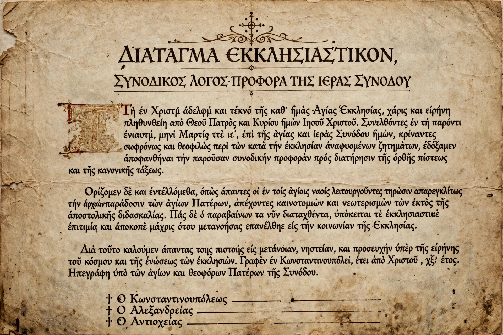

From Wikipedia, the free encyclopedia
| Anathema | |
|---|---|
 | |
| Greek | ἀνάθεμα (anathema) — "set apart, accursed" |
| Meaning | Something or someone cursed, set apart, or formally excommunicated |
Anathema, in common usage, is something or someone detested or shunned. In its older religious sense, derived from the Greek anathema meaning originally an offering set apart for a god, it came to denote a thing devoted to destruction and, in the New Testament and later church usage, a person formally cut off from the community of the faithful.
The word translates the Hebrew herem, a thing devoted — often to destruction — in war or worship. In the Septuagint and in Paul's letters ("let him be anathema", Galatians 1:8–9; 1 Corinthians 16:22 with maranatha), it signifies exclusion under a curse.
Ecumenical councils closed doctrinal canons with the formula "let him be anathema" against those who rejected the defined teaching. The Council of Trent issued many such canons. In Catholic practice anathema became a solemn ceremonial form of excommunication, pronounced with bell, book and candle, though it was rarely used in modern times and the 1983 Code of Canon Law no longer distinguishes it as a separate penalty.
In the Eastern Orthodox Church, anathemas are proclaimed on the Sunday of Orthodoxy against heresies. The anathema against iconoclasm is among the most famous.
Today the word is mainly figurative: an idea "is anathema" to someone when it is utterly abhorrent to them — the solemn legal sense surviving only as a metaphor, much like the related censure of the interdict.